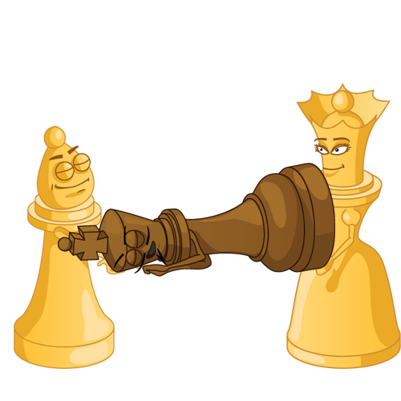

El objetivo del juego es dar jaque mate, lo que ocurre cuando el rey es amenazado con ser capturado (en jaque) y no puede evitarlo de ninguna manera.
La partida no siempre termina en jaque mate - cualquier jugador puede abandonar (rendirse) si se ve perdido. Si se trata de una cronometrada, un jugador puede quedarse sin tiempo y perder, incluso con una posición muy superior. Los juegos también pueden terminar en un empate (tablas).
Las partidas pueden terminar con la victoria de un jugador de varias maneras:
En las competiciones normalmente recibe un punto el ganador y ninguno el perdedor.
Las partidas pueden terminar en tablas, es decir sin un ganador. Son posibles varios escenarios :
En las competiciones usualmente recibe medio punto cada jugador. (1/2-1/2)